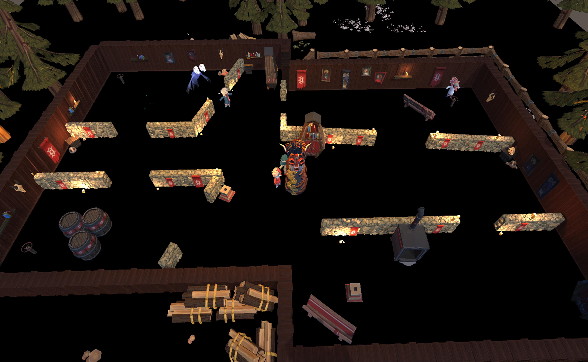

Job
Gameplay/AI Programmer.
Concept:
Kukeri est un party game survival en arène dans lequel 4 joueurs jouent en coopération.
Ils doivent être vigilants aux dangers et au Melalo, un démon tzigane qui les pourchasse.
Ils doivent coopérer pour emmener un totem au centre d’un cercle tout en se défendant du Melalo afin de survivre jusqu’au matin.
Les joueurs doivent se relayer pour pousser le totem, la réactiver et capter l’attention du monstre.
Camera:
La caméra est fixe, avec une vue top-down, et montre toutes les délimitations des endroits accessibles pour les joueurs.
Controller:
Les joueurs contrôlent chacun un personnage qui se déplace en trottinant. Le joueur utilise le stick gauche pour se déplacer et seulement le bouton A pour interagir avec les différents éléments ou tâches.
Mécaniques :
● Déplacement classique typé arcade
● Interaction avec les mécanismes du cercle magique
● Pousser des objets légers
● Pousser des objets lourds plus vite à plusieurs
● Sauver un personnage paralysé
Team
GP :
Félix Pinchon
GA :
Lili Csonka
Thibault Moitel
Valentin Besson
Anaïs Diquet
Camille Gangneux
LD :
Benoît Cassin
GD :
Grégoire Meyer
Théo Nottez
Tom Kurcz
Joaquim Lancesseur
Moteur
Unity.